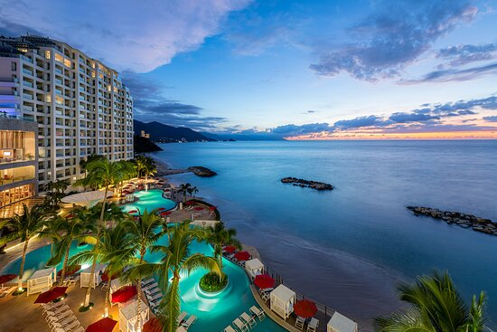
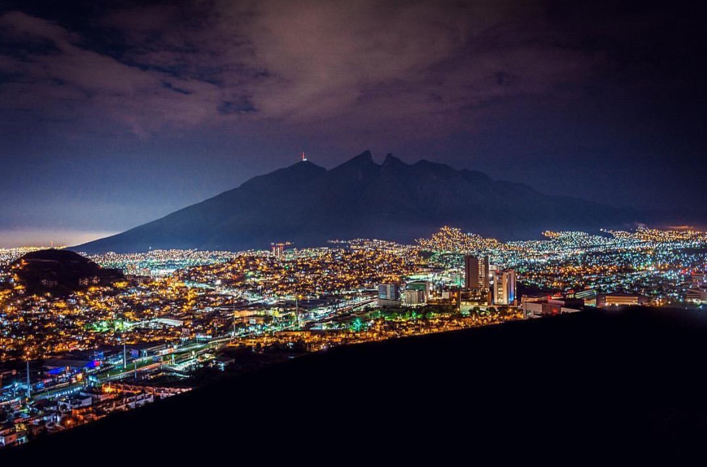

Cancún es una ciudad de México ubicada en la península de Yucatán que limita con el mar Caribe y que es conocida por sus playas,
los numerosos centros turísticos y la vida nocturna.
Se compone de 2 áreas distintas: el área del centro más tradicional y la Zona Hotelera,
la franja costera con hoteles altos, clubes nocturnos, tiendas y restaurantes.
Cancún también es un destino popular entre estudiantes durante el período de vacaciones universitarias en la primavera.

PUERTO VALLARTA
Puerto Vallarta es un balneario en la costa del Pacífico de México, en el estado de Jalisco.
Es famoso por sus playas, los deportes acuáticos y la vida nocturna.
En el centro con adoquines, se encuentra la adornada iglesia de Nuestra Señora de Guadalupe,
además de tiendas de moda y una variedad de restaurantes y bares.
El Malecón es un paseo costero con esculturas contemporáneas, bares, salones y clubes nocturnos.

MONTERREY
Monterrey, la capital del estado de Nuevo León en el noreste de México,
es un extenso centro industrial y de negocios rodeado de montañas.
En lo alto se encuentra el Palacio del Obispado,
una construcción barroca antigua con un museo regional.
En el centro de la ciudad se ubica la Macroplaza,
una amplia zona verde de plazas conectadas,
que alberga el impresionante Museo de Arte Contemporáneo y la torre del Faro de Comercio,
que emite un láser verde hacia el cielo